Goodreads graphs
Sarah Heidmann
Data through 1 Aug 2024
Goodreads redone
Books and pages read each year
In 2024, I’ve read 60 books so far. If I keep up this pace, I will finish 102 books by the end of this year.
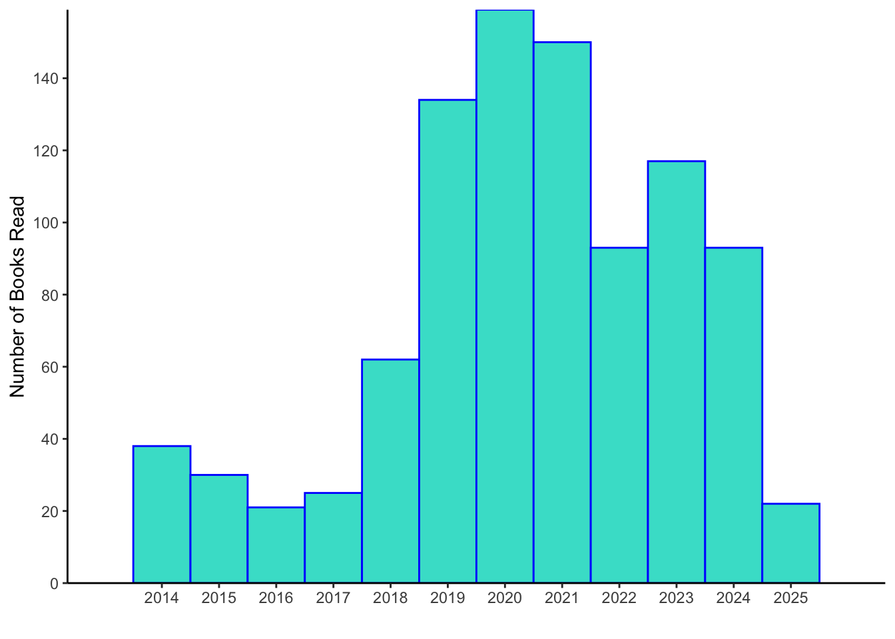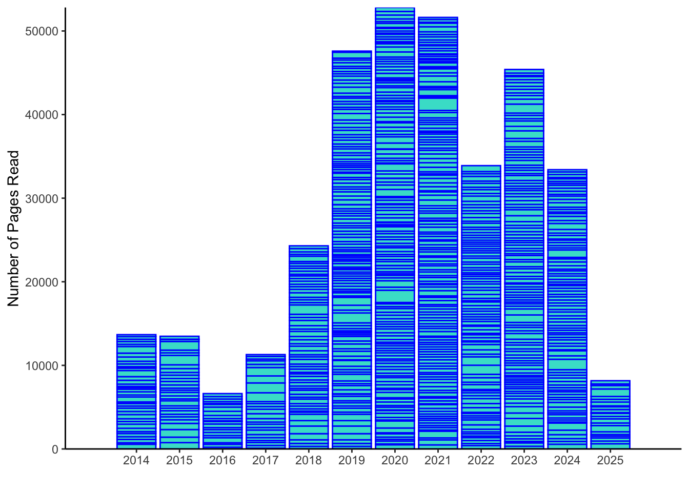
Publication year by date read
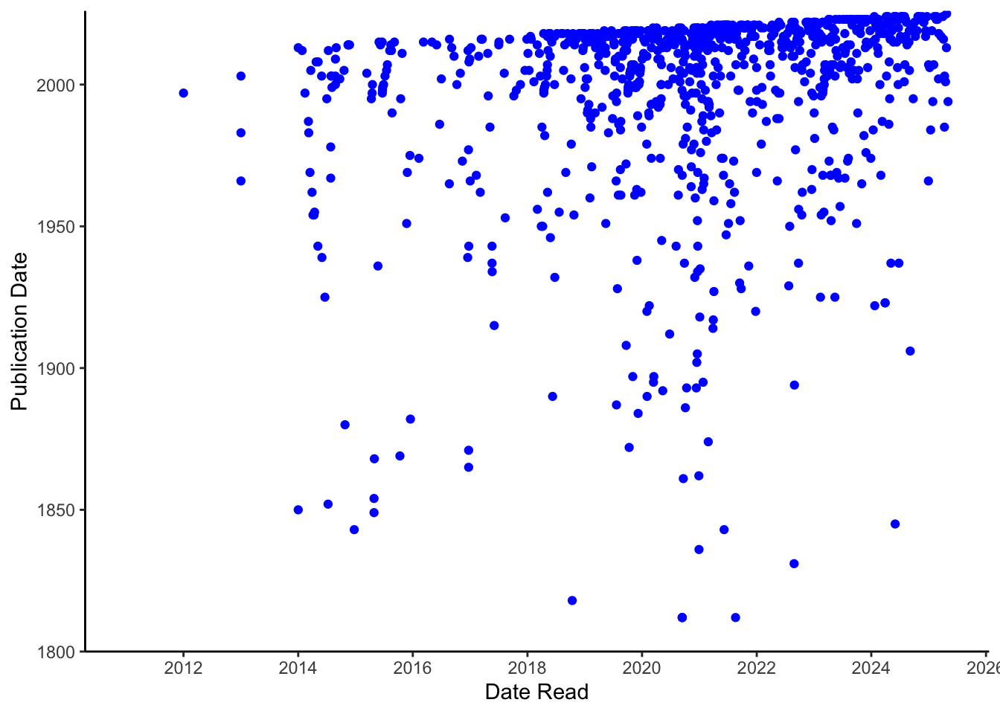
Read vs unread by publication year
Books and pages read each month
 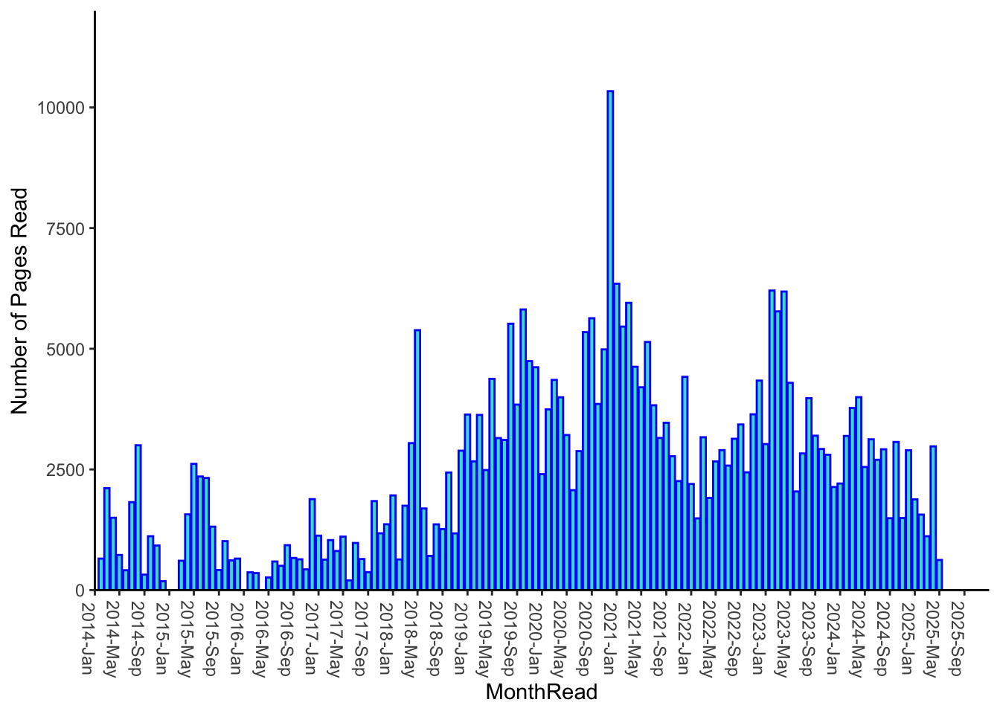
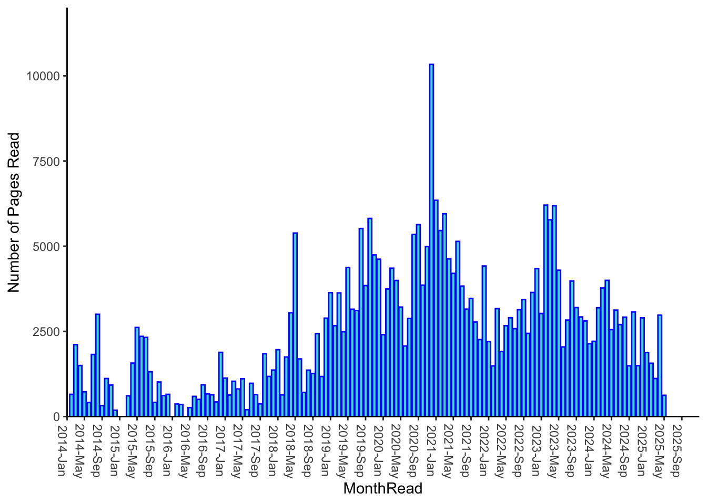
My extras
Most read books
Books added/read by month
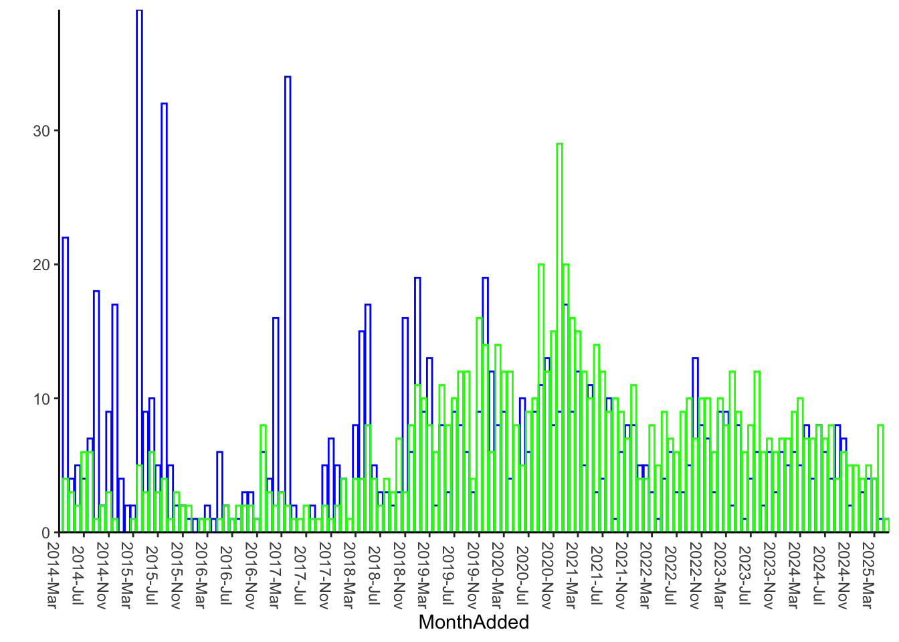
Rate added/read by month
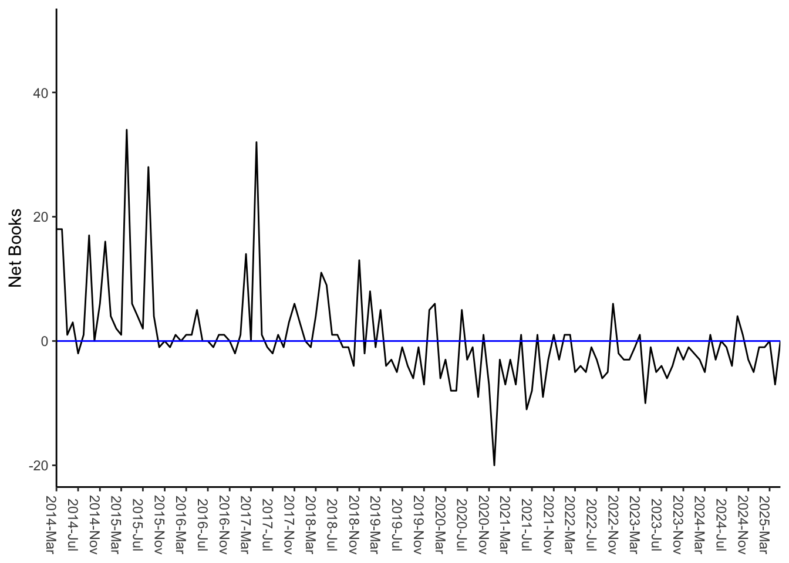
Does add rate correlate with read rate?
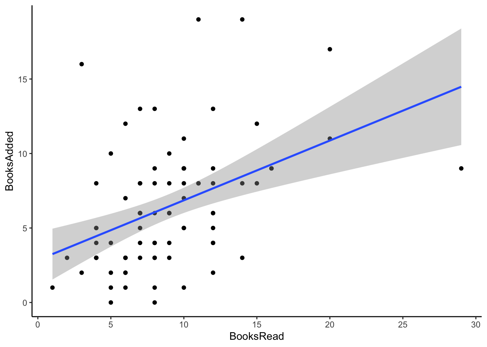
I do seem to add more books in months when I read more books (Spearman’s rank correlation, rho= 0.42, p= 0).
Cumulative want-to-read
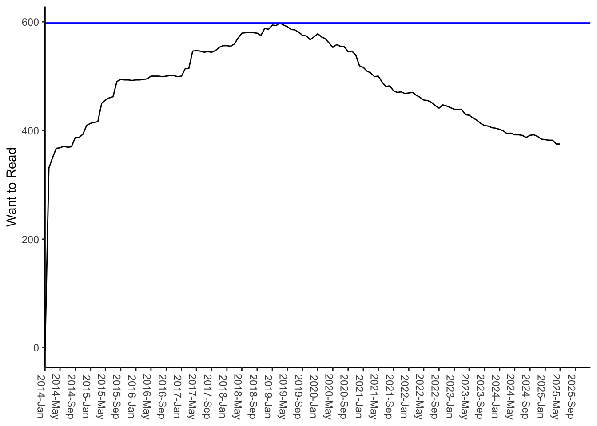
Average books read by month
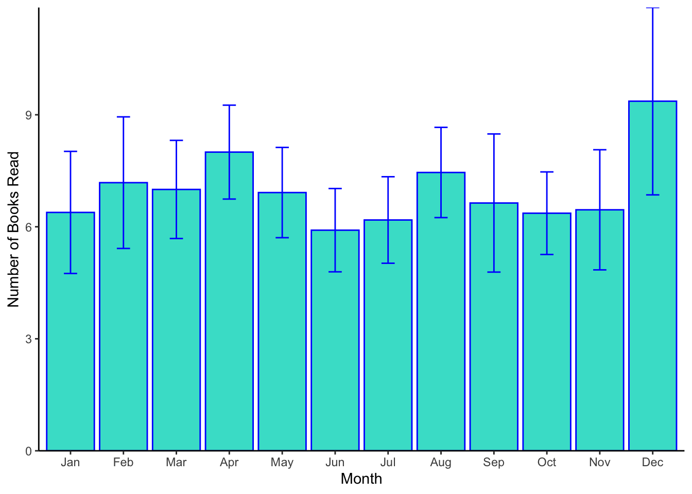
Average books added by month
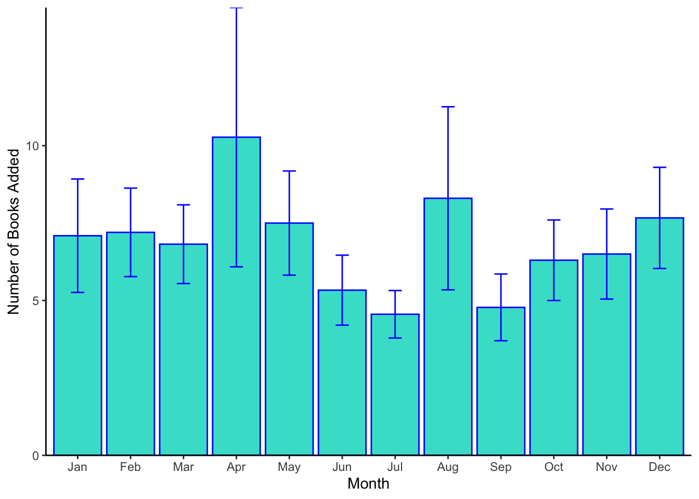